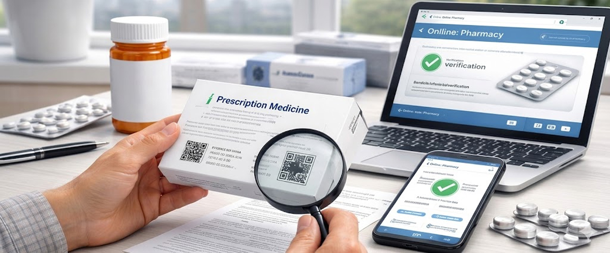

This guide explains how to obtain prescription medicines online safely in the UK. Read through carefully to understand each step and avoid common mistakes. Following these steps ensures a secure, legal, and hassle-free experience.
Talk to Our PharmacistWhy do people in the UK choose online medicine?
Across the UK, more patients are choosing online medicine as healthcare access evolves. Digital pharmacies make treatment faster and more flexible without the usual waiting-room delays. It gives patients more independence while keeping safety standards intact. Key Reasons UK Patients Prefer Online Medicine:
-
Long GP waiting periods: Online
consultations help bypass delays for routine prescriptions.
-
Time efficiency: Order
medicines at any hour without disrupting work or personal schedules.
-
Improved privacy: Suitable
for sensitive health concerns that patients prefer to manage discreetly.
-
Repeat prescription convenience: Ongoing
treatments can be refilled easily with fewer appointments.
-
Accessibility: Ideal
for rural residents, elderly patients, or those with mobility challenges.
Step-by-step guide to getting prescription medicines online
Ordering prescription medicines online in the UK is safe and legal when proper checks are followed. Online pharmacies provide faster access without compromising medical oversight. Follow the steps below to ensure a secure experience.
Step 1: Confirm prescription requirement
Some medicines are available over the counter, but many require a valid prescription. UK law strictly regulates prescription-only medicines to protect patient safety. Always verify the medicine category before proceeding. Licensed pharmacies clearly state prescription requirements.
Step 2: Select a UK-registered pharmacy
Only use pharmacies registered with the GPhC and regulated by the MHRA. Registration confirms legal operation and professional standards. Check for a UK address, registration number, and contact details—absence of these is a warning sign.
Step 3: Choose your prescription method
You can upload an existing NHS or private prescription or complete an online consultation. Both options are fully legal in the UK. Online consultations allow licensed prescribers to assess eligibility when no prescription is available.
Step 4: Complete the medical assessment
Patients without a prescription must complete a detailed health questionnaire. This information is reviewed by qualified professionals. Accurate disclosure is essential to ensure safe and appropriate treatment decisions. Honest and thorough answers help prevent complications and ensure the correct medicine is prescribed.
Step 5: Prescription review and decision
A registered clinician evaluates your consultation to determine suitability. Approval leads to a private prescription. If unsuitable, alternatives or GP referral advice may be provided. This step guarantees that the prescribed treatment is safe, legal, and tailored to your specific health needs.
Step 6: Secure checkout process
Once approved, you can place your order through secure payment systems. Legitimate pharmacies use encrypted checkout processes. Clear pricing and delivery details indicate transparency and reliability.
Step 7: Pharmacy dispensing checks
Medicines are dispensed from licensed UK premises following quality and safety checks. Packaging must include official labeling and patient information leaflets. These checks ensure you receive the correct medicine in the right strength and quantity.
Step 8: Home delivery
Orders are delivered via tracked or next-day services, often in discreet packaging. Certain medicines may require a signature upon delivery. Delivery services also provide tracking so you can monitor your order until it reaches your door.
Step 9: Follow usage instructions
Read all instructions carefully and adhere to dosage guidance. Online prescriptions carry the same responsibility as in-person ones. Contact the pharmacy or GP if side effects occur. Proper adherence helps maximize effectiveness and minimize any potential health risks.
Step 10: Repeat prescriptions and monitoring
Many pharmacies offer repeat services for ongoing conditions. Regular reviews help maintain treatment safety and effectiveness. This ensures patients stay on the right dosage and avoid potential complications.
Things to consider before buying prescription medicines online
Online convenience is helpful, but caution is essential. Paying attention to key safety checks reduces health and financial risks. Taking a few extra minutes to verify a pharmacy can prevent serious problems later.
-
Confirm UK registration: Verify
GPhC and MHRA approval before ordering.
-
Avoid shortcut websites: Prescription
medicines must involve professional review.
-
Verify prescriber credentials: Ensure
consultations are handled by licensed clinicians.
-
Check medicine details: Dosage
instructions and leaflets should always be included.
-
Ensure aftercare availability: Support
services indicate a responsible pharmacy.
Concluding remarks
Buying prescription medicines online in the UK is safe when handled responsibly. Avoid unverified platforms, confirm regulatory approval, and follow legal procedures. Convenience should never compromise health.
For a fast, transparent, and regulated service, Midland provides a reliable private healthcare solution. Their team of licensed professionals ensures safe prescriptions and prompt delivery every time.
Contact UsFAQ: Purchasing medicine online safely in the UK
Is buying prescription medicine online legal in the UK?
Yes. UK law allows online prescription services through pharmacies registered with the GPhC and regulated by the MHRA. These regulations ensure medicines are prescribed, dispensed, and delivered under strict safety and quality standards.
Is my medical data protected?
Yes, provided the pharmacy follows GDPR and uses encrypted, secure systems. Reputable pharmacies protect personal and medical data from unauthorized access. Always check the privacy policy to ensure your information is handled responsibly.
Can NHS prescriptions be filled online?
Yes. Many NHS-approved pharmacies handle repeat prescriptions through digital platforms. Patients can manage refills online and have medicines delivered directly to their homes. This service helps save time while maintaining NHS safety standards.
How can I spot genuine reviews?
Look for verified, detailed feedback on platforms like Trustpilot. Generic or repetitive reviews are often unreliable. Genuine reviews usually mention delivery speed, consultation quality, and packaging experience.